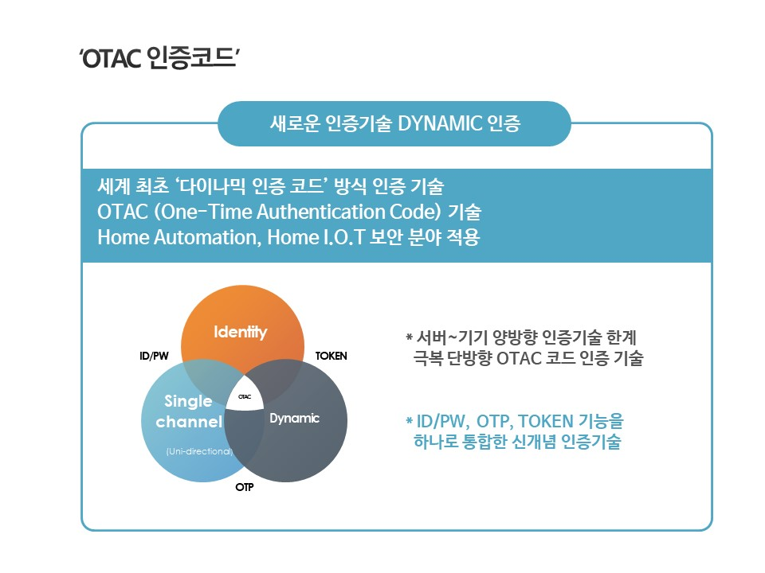
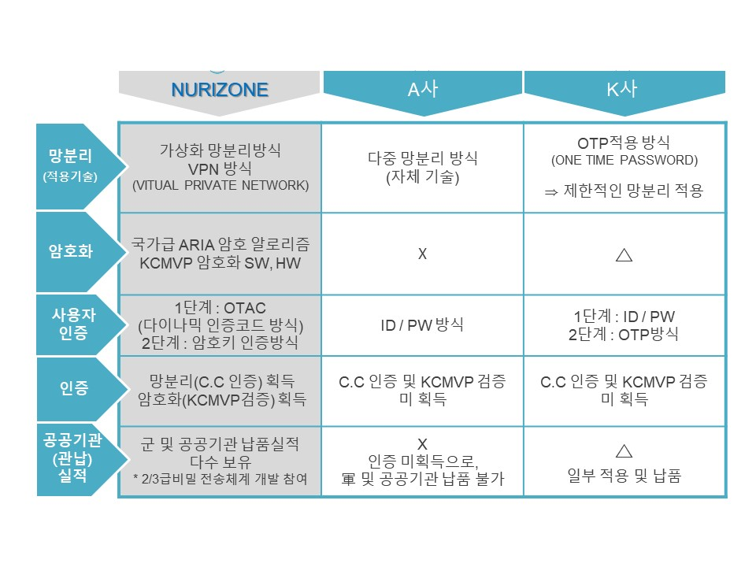

NURI-ZONE(누리존) SOLUTION
- 안녕하세요? "당신의 보안 안전지대,
누리존(NURI-ZONE-blog)입니다!"

- 누리존(NURI-ZONE)은 "다중중첩보안 솔루션을 제공합니다."
- 누리존(NURI-ZONE)은 "이미 검증된 솔루션으로 최고 수준의 보안성을 약속합니다."
Why NURI-ZONE?
- 누리존의 '다중중첩 보안솔루션'

- 인증 및 방화벽, 가상화(망분리), 암호화기술이 융합된 최고 수준의 보안 솔루션

- 이미 검증된 보안솔루션

- 보안 인증의 신기술(OTAC)을 최초 적용

- 누리존 솔루션의 비교 우위와 차별점
